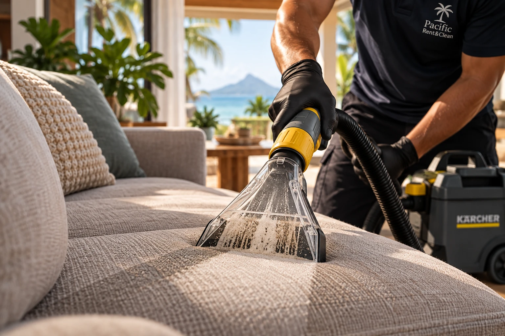
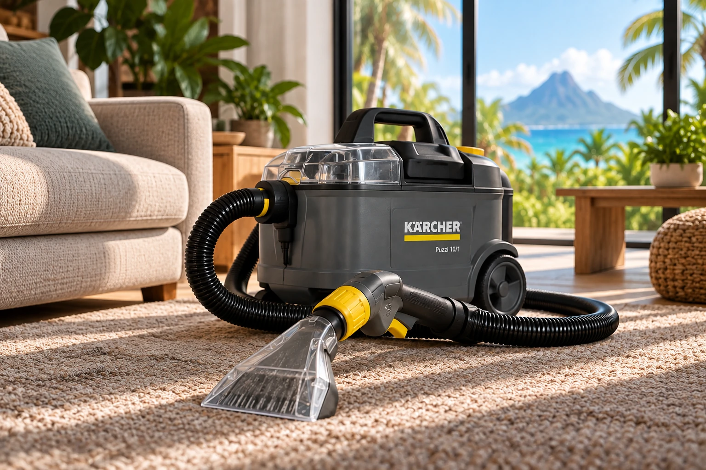
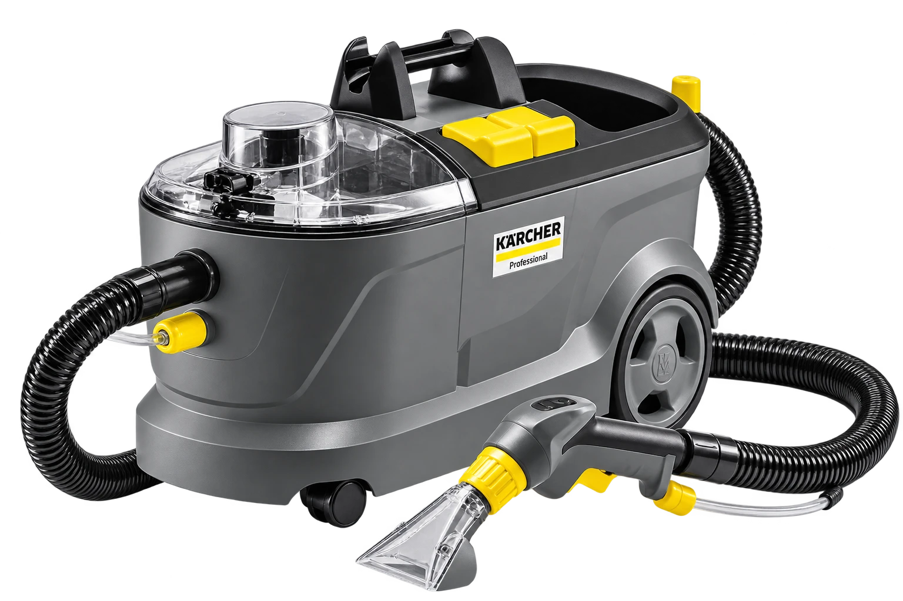

Ce que l’aspirateur laisse derrière lui.
Injecté.
Décollé.
Extrait.
Ce qu’aucun aspirateur n’atteint. On l’enlève.
Nettoyage textile professionnel par injection-extraction à Tahiti.
Ce qu’aucun aspirateur n’atteint. On l’enlève.
Nettoyage textile professionnel par injection-extraction à Tahiti.
Injection extraction. Matériel professionnel. Intervention à domicile. Location disponible. Produits professionnels. Tahiti. Ouvert 7j/7.
Votre choix
Deux façons
Deux façons
de retrouver le propre.

Les prestations
Ce qu’on remet à neuf.

L’outil
La puissance professionnelle,
La puissance professionnelle,
entre vos mains.
Le Kärcher Puzzi 10/1. Deux réservoirs, une gâchette, une turbine. Touchez une pièce pour savoir ce qu’elle fait.

01 — INJECTION
1 bar
02 — EAU PROPRE
Réservoir 10 L
03 — EXTRACTION
Aspire l’eau et les saletés des fibres
04 — EAU RÉCUPÉRÉE
Réservoir 9 L
Le même équipement professionnel utilisé pour nos prestations et disponible à la location.
1 bar
02 — EAU PROPRE
Réservoir 10 L
03 — EXTRACTION
Aspire l’eau et les saletés des fibres
04 — EAU RÉCUPÉRÉE
Réservoir 9 L
Le même équipement professionnel utilisé pour nos prestations et disponible à la location.
Les questions qui bloquent
Avant de réserver.
Ça dépend. Il faut laisser le temps à la fibre de sécher en profondeur : la météo du jour, l’aération, et l’endroit où se trouve le mobilier jouent. Au soleil dehors, c’est rapide ; dans une pièce fermée et peu aérée, ça prend plus de temps. On vous explique la bonne méthode avant, et on reste joignable à pacificrentclean@gmail.com.
On injecte et on extrait en profondeur : on nettoie la fibre, pas seulement la surface. Les saletés et les taches récentes s’en vont très bien. En revanche, une tache très ancienne, restée longtemps incrustée sur le tissu, peut ne pas partir complètement. On fait toujours le point avec vous avant de commencer, sans rien promettre de faux.
Vous réservez une date, la machine est livrée chez vous, vous l’avez 24 heures à partir de la livraison. Les pastilles partent avec.
À vous
Prêt à voir